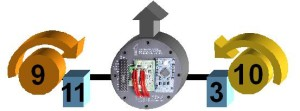
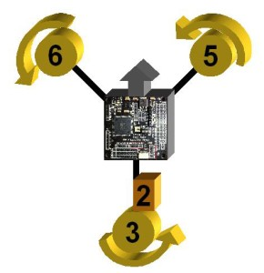
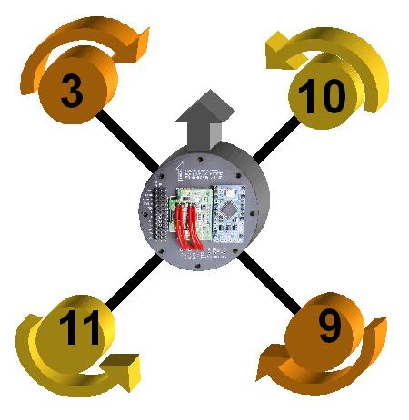
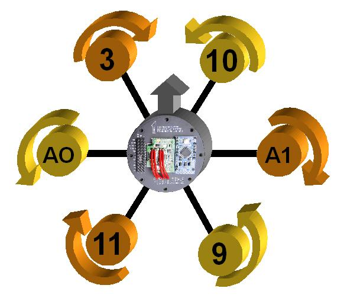
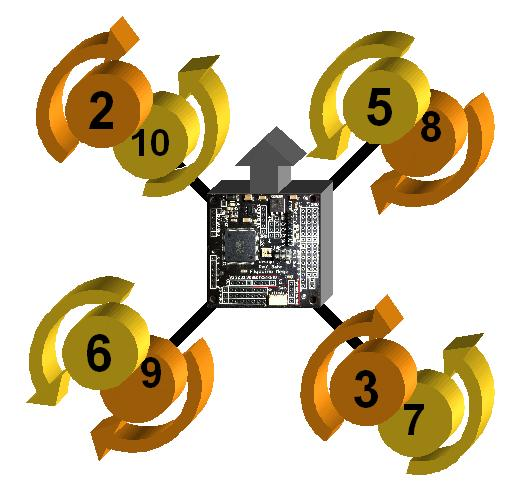

Types of drones
How many types and how they are clasified
Types by Class
Toy Class
The great majority of the drones you see available all over the web.
These are very simple crafts that don’t have a lot of expectations, other than having fun and learning what controlling a multicopter feels like. The great majority of Toy drones are in the quadcopter style.
The range in Toy drones can be anything from a simple quadcopter with a small camera to record to something to something larger, but still the same form and function. Expect to pay anywhere around $20 to $500. Common brands include Syma, Hubsan, Parrot, Estes, Neewer, Cheerson, UDI, and others.
Camera Class
The real division between this class of drones and Toy drones will be in the technology they utilize.
I call these Camera drones, but they can also be called Hobby drones. Camera drones are much more expensive, but come with much higher end technology.
They will often have higher end cameras (capable of recording in 4K), advanced navigation components (such as GPS, vision positing, etc), as well controllers with higher end features. Many also relay video stream from the craft down to the pilot’s smart phone or tablet to give a kind of first person view. Camera drones will focus more on the camera and its ability to capture high end footage.
In order to do so, they may also employ the assistance of a gimbal of some kind. The gimbal provides stabilization via a number of different axes. General cost is between $500 and $2,000. Common brands include DJI, 3DR, Yuneec, Walkera, and others.
Camera Class
The real division between this class of drones and Toy drones will be in the technology they utilize.
I call these Camera drones, but they can also be called Hobby drones. Camera drones are much more expensive, but come with much higher end technology.
They will often have higher end cameras (capable of recording in 4K), advanced navigation components (such as GPS, vision positing, etc), as well controllers with higher end features. Many also relay video stream from the craft down to the pilot’s smart phone or tablet to give a kind of first person view. Camera drones will focus more on the camera and its ability to capture high end footage.
In order to do so, they may also employ the assistance of a gimbal of some kind. The gimbal provides stabilization via a number of different axes. General cost is between $500 and $2,000. Common brands include DJI, 3DR, Yuneec, Walkera, and others.
Cinema Class
Cinema drones are similar to Camera drones, but they take things to an entirely new level.
While Camera drones will capture great stabilized footage with either a proprietary camera or a GoPro, Cinema drones offer higher weight carrying capacity to allow a user to carry anything from a DSLR Camera to a high end film camera like a RED Digital Cinema camera.
. At this point you will often see an increased number of arms and motors as well as size. Cinema drones offer no compromise when it comes to quality and features. Price range can go from $2,000 to higher than $15,000. Companies might include Freefly, DJI, xFold, and more custom made drones.
Industrial Class
Industrial Drones are a very niche category currently.
Really what sets apart an Industrial drone apart is more in what type of payload it is carrying. Instead of a camera that records 4K video, it might carry a LIDAR system or thermal camera
. These drones fit specific roles in different industries. Maybe you’re a farmer who wants to look at the hydration of your crops, or a ski patrol wanting to use thermal vision for search and rescue, the applications are wide. Not for your typical consumer, but this category is quickly expanding. Can range anywhere from the low thousands of dollars to several tens of thousands of dollars.
Racing Class
Taking quadcopters and pushing them to their flying limits!
These quadcopters are typically smaller in size, around 250mm in diagonal length, and are meant to push the limits of both speed and maneuverability.
For a great introductory look at the components that make up and FPV Racer, be sure to read James’s post. FPV Racers are made FPV (first person view) by having an on-board camera and a system in place to relay the camera footage to the pilot in real-time allowing the pilot to have a “cockpit” type view. The components come from a very wide range of manufacturers and many new ones are being made all the time. A typical FPV setup will cost anywhere from $300 to $800 or more..
Fighting Class
That kind of quadcopter are for aerial fight where the last standing multicopter in the air wins
These types of multicopters are very powerfull and durable.Theirs frames are almost unbreakable and can also have weapons or defenses. They are the more durable off all, as they need to support high stress and long flight times to battle their oponents.
Types by Motors
They can be also clasified by number of motors
Bicopter – 2-Motor Multicopter
The BiCopter has two motors that can be moved by servos to desired tilt angles. It looks similar to the “Avatar Gunship” (if you have seen the movie Avatar).
Bicopter could be the cheapest multicopter config to build among all because it only uses two motors and two servos. But it’s also the most difficult platform to stabilize in flight. It has the least lifting power given the fact that it only has 2 motors.Bicopter is not a very popular configuration for hobbyists, and there isn’t much information to be found on the internet
Tricopter – 3-Motor Multicopter
The Tricopter has 3 motors, and typically in a “Y” shape, where the arms are usually 120 degrees apart. Tricopters can sometimes be found in a “T” shape too.Two propellers on the front arms spins the opposite direction to counter each other out. The rear motor can be tilted left and right by a servo to enable the yaw mechanism.
It’s a popular yet relatively cheap configuration because it only requires 3 motors, although you also need an additional servo but they are generally cheaper than brushless motors. Generally speaking, tricopters are less stable than other multirotors with more motors, and it’s not as robust due to the vulnerability of the tail servo and mechanics in crashes. For hobbyists, it’s also harder to build because of the yaw mechanism.
Quadcopter – 4-Motor Multicopter
Quadcopter is the most popular multirotor configuration, with the simplest mechanical structure. It’s widely used for drone racing in the form of “mini quad”.
There are 2 main configurations: X or +. X config is more popular as you can keep the propellers out of the camera’s view (for FPV and aerial filming). Some people fly the plus (+) config because it’s more intuitive, and flies like an airplane. It’s easier to figure out the orientation.
There is also the H configuration, which allows a camera to be placed on the frame well forward to avoid having propellers in the view of the camera. A quadcopter has 4 motors mounted on a symmetric frame, each arm is typically 90 degree apart for the X4 config. Two motors rotate CW (clockwise), and the other two rotate CCW (counter clockwise) to create opposite force to stay balance.
Hexacopter – 6-Motor Multicopter

The hexacopter has 6 motors mounted typically 60 degree apart on a symmetric frame, with three sets of CW and CCW motors/propellers.
Hexacopters are very similar to the quadcopters, but they provide more lifting capacity with the extra motors. There is also improvement in redundancy: if one motor fails, the aircraft can still remain stable enough for a safe landing. The downside is that they tend to be larger in size and more expensive to build.
The Y6 has 6 motors on a “Y” shape frame. They are similar in shape to a tricopter but it has two motors on per arm, one above and the other. It uses both CW and CCW propellers on the same arm rather than a servo to enable yaw.
Octocopter – 8-Motor Multicopter

A typical octocopter has 8 motors on the same level with four sets of CW and CCW propellers.
Octocopters are similar to quadcopters and hexacopters. It’s like an upgrade version of the hexacopter with even more lifting capacity and redundancy.However the large number of motors means they draw more current, and you will probably need to carry multiple battery packs. Also it’s going to be expensive.They are very popular as aerial photography platforms and carrying heavy, professional filming gears.
An X8 octocopter uses 8 motors that are mounted on four arms, on an “X” shaped frame with four sets of CW and CCW props. Characteristics are similar to the Y6.
How to choose the right multicopter configuration?
It depends on what you are going to do with it.
- For racing or freestyle, you won’t go wrong with a quadcopter or tricopter. Even if you crash there are fewer props to replace (which happens more often when you fly fast and in close proximity).
- For aerial photography you can probably use get away with a quadcopter if you are just recording with a GoPro.
- If you want to carry heavier gear like a gimbal, or you want a more stable and reliable platform, you might want to consider a Hexacopter or even Octocopter.